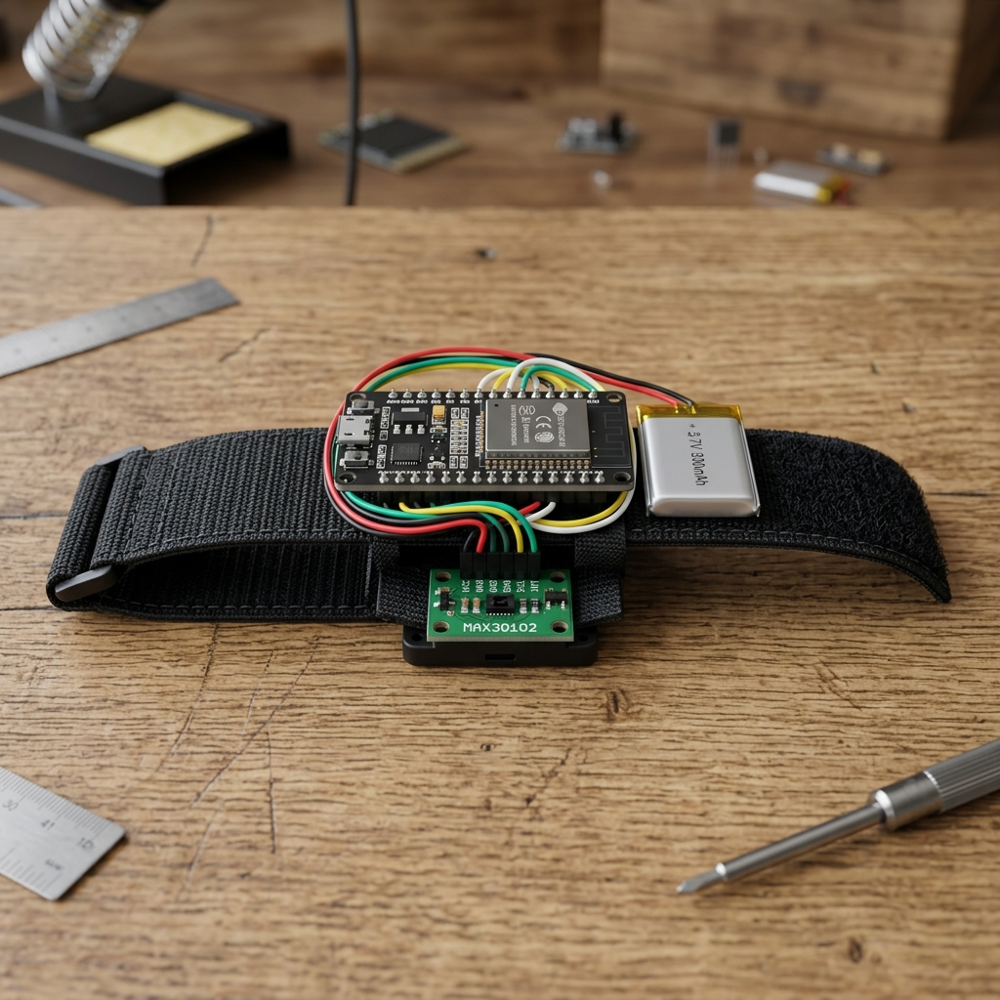
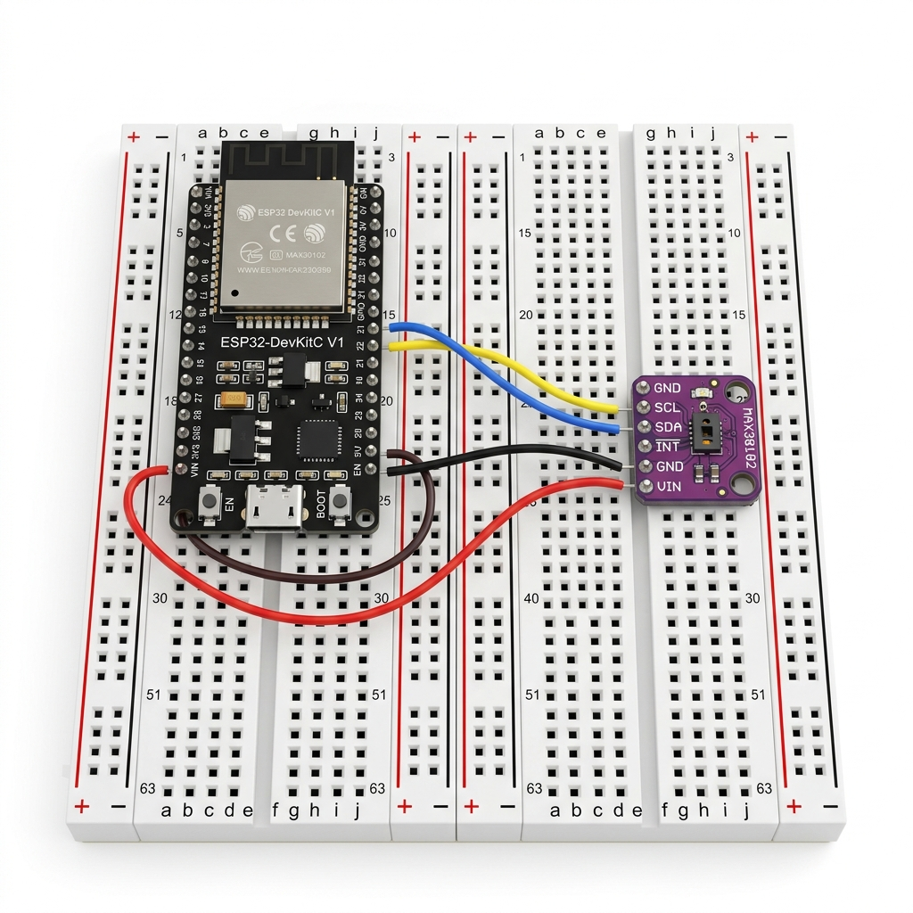

Monitoreo no invasivo de ritmo cardíaco, presión arterial y saturación de oxígeno en sangre ($SpO_2$) en tiempo real. Desarrollada bajo los lineamientos estéticos y de accesibilidad institucional.

Monitorea tu señal cardiovascular y visualiza la forma de onda pulsátil mediante conexión inalámbrica directa con la pulsera.
📊 Muestreo: -- Hz
📉 Pérdida: --%
📋 Muestras: 0
Algoritmos avanzados desarrollados para la estimación de variables clínicas a partir de la señal PPG de reflectancia.
Calculado utilizando un suavizado adaptativo de la señal infrarroja (paso bajo de 200ms) y extracción de mediana de intervalos RR. Altamente resistente a ruidos e interferencias de la muesca dícrita.
Algoritmo de análisis de onda de pulso (PWA) que mide el tiempo de sístole (subida) y diástole (bajada) en milisegundos de cada latido, estimando valores sistólicos/diastólicos de presión arterial.
Establece la relación de atenuación luminosa entre los LEDs rojo e infrarrojo del MAX30102. Aplica el cálculo de amplitudes CA/CC y la curva de regresión estándar de saturación de oxígeno.
Especificaciones de conexión física y ensamble entre el sensor óptico y el microcontrolador ESP32.

Carga este código en tu placa ESP32 usando Arduino IDE para habilitar la transmisión de datos a la computadora.
#include <Wire.h>
#include "MAX30105.h" // Librería SparkFun MAX3010x (funciona para el MAX30102)
#include <BLEDevice.h>
#include <BLEServer.h>
#include <BLEUtils.h>
#include <BLE2902.h>
MAX30105 particleSensor;
// UUIDs de Bluetooth (Deben coincidir con la aplicación de la PC)
#define SERVICE_UUID "4fafc201-1fb5-459e-8fcc-c5c9c331914b"
#define CHAR_UUID "beb5483e-36e1-4688-b7f5-ea07361b26a8" // Notificaciones
#define CONTROL_UUID "12345678-1234-1234-1234-123456789abc" // Comandos START/STOP
BLEServer* pServer = NULL;
BLECharacteristic* pDataChar = NULL;
BLECharacteristic* pControlChar = NULL;
bool deviceConnected = false;
bool streamingActive = false;
uint16_t packetSequence = 0;
// Variables para acumular las muestras de doble canal
#define SAMPLE_PAIRS_PER_PACKET 2
uint32_t redBuffer[SAMPLE_PAIRS_PER_PACKET];
uint32_t irBuffer[SAMPLE_PAIRS_PER_PACKET];
uint8_t bufferIndex = 0;
// Callbacks para detectar conexión y desconexión de la PC
class MyServerCallbacks: public BLEServerCallbacks {
void onConnect(BLEServer* pServer) {
deviceConnected = true;
};
void onDisconnect(BLEServer* pServer) {
deviceConnected = false;
streamingActive = false;
packetSequence = 0;
bufferIndex = 0;
pServer->startAdvertising(); // Reiniciar anuncios para permitir reconexión
}
};
// Callbacks para recibir los comandos de START o STOP desde la PC (Corregido para compatibilidad)
class ControlCallbacks: public BLECharacteristicCallbacks {
void onWrite(BLECharacteristic *pCharacteristic) {
String rxValue = pCharacteristic->getValue().c_str();
if (rxValue.length() > 0) {
if (rxValue == "START") {
streamingActive = true;
packetSequence = 0;
bufferIndex = 0;
} else if (rxValue == "STOP") {
streamingActive = false;
}
}
}
};
void setup() {
Serial.begin(115200);
// 1. Inicializar sensor MAX30102 por bus I2C
if (!particleSensor.begin(Wire, I2C_SPEED_FAST)) {
Serial.println("¡Sensor MAX30102 no encontrado! Revisa las conexiones.");
while (1);
}
// Configuración del sensor para la muñeca (SpO2 / Multi-LED)
byte ledBrightness = 60; // 0 (apagado) a 255 (máximo). 60 es óptimo para la muñeca.
byte sampleAverage = 1; // 1 = sin promediar (100 Hz puros)
byte ledMode = 2; // 2 = LED Rojo + LED Infrarrojo (modo SpO2)
int sampleRate = 100; // Frecuencia: 100 muestras por segundo (Hz)
int pulseWidth = 411; // Ancho de pulso del LED en microsegundos
int adcRange = 4096; // Rango del conversor ADC (4096 nA)
particleSensor.setup(ledBrightness, sampleAverage, ledMode, sampleRate, pulseWidth, adcRange);
// 2. Inicializar Bluetooth de bajo consumo (BLE)
BLEDevice::init("Tensiometro_Pulsera"); // Nombre del dispositivo
pServer = BLEDevice::createServer();
pServer->setCallbacks(new MyServerCallbacks());
BLEService *pService = pServer->createService(SERVICE_UUID);
// Característica de datos (Notificación)
pDataChar = pService->createCharacteristic(
CHAR_UUID,
BLECharacteristic::PROPERTY_NOTIFY
);
pDataChar->addDescriptor(new BLE2902());
// Característica de control (Escritura desde la PC)
pControlChar = pService->createCharacteristic(
CONTROL_UUID,
BLECharacteristic::PROPERTY_WRITE
);
pControlChar->setCallbacks(new ControlCallbacks());
pService->start();
// Iniciar transmisiones de anuncio BLE
BLEAdvertising *pAdvertising = BLEDevice::getAdvertising();
pAdvertising->addServiceUUID(SERVICE_UUID);
pAdvertising->setScanResponse(true);
pAdvertising->setMinPreferred(0x06);
pAdvertising->setMinPreferred(0x12);
BLEDevice::startAdvertising();
Serial.println("Pulsera BLE lista. Esperando vinculacion con la PC...");
}
void loop() {
if (deviceConnected && streamingActive) {
particleSensor.check(); // Lee el buffer FIFO del sensor por I2C
// Si el sensor tiene muestras listas en su memoria interna
while (particleSensor.available()) {
redBuffer[bufferIndex] = particleSensor.getRed();
irBuffer[bufferIndex] = particleSensor.getIR();
particleSensor.nextSample(); // Avanzar al siguiente dato en el chip
bufferIndex++;
// Al juntar 2 muestras de ambos canales (12 bytes de datos) los enviamos
if (bufferIndex >= SAMPLE_PAIRS_PER_PACKET) {
uint8_t payload[14];
// Muestra 1: Rojo (3 bytes, Big Endian)
payload[0] = (redBuffer[0] >> 16) & 0xFF;
payload[1] = (redBuffer[0] >> 8) & 0xFF;
payload[2] = redBuffer[0] & 0xFF;
// Muestra 1: Infrarrojo (3 bytes, Big Endian)
payload[3] = (irBuffer[0] >> 16) & 0xFF;
payload[4] = (irBuffer[0] >> 8) & 0xFF;
payload[5] = irBuffer[0] & 0xFF;
// Muestra 2: Rojo (3 bytes, Big Endian)
payload[6] = (redBuffer[1] >> 16) & 0xFF;
payload[7] = (redBuffer[1] >> 8) & 0xFF;
payload[8] = redBuffer[1] & 0xFF;
// Muestra 2: Infrarrojo (3 bytes, Big Endian)
payload[9] = (irBuffer[1] >> 16) & 0xFF;
payload[10] = (irBuffer[1] >> 8) & 0xFF;
payload[11] = irBuffer[1] & 0xFF;
// Secuencia del paquete (2 bytes, Little Endian)
payload[12] = packetSequence & 0xFF;
payload[13] = (packetSequence >> 8) & 0xFF;
// Enviar notificación a la computadora
pDataChar->setValue(payload, 14);
pDataChar->notify();
packetSequence++;
bufferIndex = 0; // Limpiar buffer para las siguientes muestras
}
}
}
// Breve retraso para estabilidad del bucle
delay(1);
}